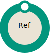

Reference documents
Both of these documents are ready to use now, but are constantly evolving and growing as new information becomes available.
The Typography Index points browser implementers and specification developers to information about how to support typographic features of scripts or writing systems from around the world, and also points to relevant information in specifications, to tests, and to useful articles and papers. It is not exhaustive, and will be added to regularly as more resources surface.
The Type Samples Repository is a place to find and contribute examples of typographic features in text, especially from non-Latin scripts.
| Feature | Specification | Maturity |
|---|---|---|
| Resource indexes | International text layout and typography index |  |
| Type samples repository |
Requirements documents
These documents are being developed by task forces composed largely of users of a given script, and often by groups working in a language written in that script. The aim of these requirements documents is to describe how the script works, and the conventions for its use to represent native content. These documents do not describe solutions or gaps for a particular technology – that is done elsewhere. In this way the documents remain fully relevant for a wide range of technologies.
Requirements for Japanese Text Layout (日本語組版処理の要件) was the flagship in the development of requirements describing script use and layout. The information in this document has been widely used, and the process used for creating it was extremely effective. It was developed in Japan, by a task force using mailing lists and holding meetings in japanese, then converted to english for review. It was published in both languages. The Japanese Layout Task Force is no longer active, although the authors are still present on i18n Activity mailing lists.
Requirements for Hangul Text Layout and Typography (한국어 텍스트 레이아웃 및 타이포그래피를 위한 요구사항) provides requirements for handling the main Korean script, Hangul. This document was developed by a group in Korea. The document is written in both English and Korean. You can use a control near the top of the window to select a single-language view.
Arabic mathematical notation provides requirements for handling the main Korean script, Hangul. This document was developed by a group in Korea. The document is written in both English and Korean. You can use a control near the top of the window to select a single-language view.
Requirements for Chinese Text Layout (中文排版需求) follows the lead of the Japanese and Korean documents and describes the text layout needs for both Simplified and Traditional Chinese scripts. The document is written in English, and Simplified and Traditional Chinese. You can use a control near the top of the window to select a single-language view.
Ethiopic Layout Requirements looks at the Ethiopic script as used for writing Amharic and Tigrinya. A First Public Working Draft has been published for review and work continues on the editor's draft.
Indic Layout Requirements sets out to document the requirements for the major scripts in India. Currently coverage is limited to Devanagari (used for languages such as Hindi and Marathi), but material is planned in the future for Bengali, Punjabi, Tamil and Telugu scripts.
Requirements for Latin Text Layout and Pagination are being developed by the Digital Publishing Interest Group. They aim to represent the requirements of the many languages using the Latin script.
Text Layout Requirements for the Arabic Script looks at the Arabic script as used for writing Standard Arabic and Persian. The document is currently an editor's draft.
Requirements for Tibetan Text Layout and Typography is still at an early stage, and we are looking for experts to contribute to the work of developing the document. Participation should reflect the needs of all communities using the Tibetan script.
Hebrew Layout Requirements will look at the requirements of the Hebrew script for writing Hebrew. We are in the process of setting up the group and recruiting participants.
Gap analysis documents
These documents examine and make proposals about what needs for change for a particular script or language on the Web and in digital publications to adequately support the requirements of the end user. This section lists documents, but much of the work in analysing and addressing gaps is done through GitHub issues or email, or by editors or implementers simply elaborating features in their work.
Additional Requirements for Bidi in HTML & CSS documents work needed to improve handling of bidirectional content in Arabic, Hebrew, Thaana, and other predominantly right-to-left scripts. The document lists the problems, proposes solutions, and documents the outcome in HTML5 and the CSS Level 3 specifications. Contributors included people from around the world who struggled with these issues.
Current Status of Japanese Typography Using Web Technologies studies whether or not CSS and HTML are sufficient for the layout of paginated documents in Japan. Specifically, it studies requirements in two documents: W3C Requirements for Japanese Layout and EPUB3 Petition of Japanese typesetting from EBPAJ. It shows which requirement is covered by which CSS specification and supported by major browsers.
Notes on Mongolian variant forms is not a work item of the W3C, but is being used to facilitate a discussion on a W3C mailing list about which shapes should be produced by fonts for Mongolian characters. Most letters have at least one isolated, initial, medial and final shape, but other shapes are produced by contextual factors, such as vowel harmony, and this work supports a movement to standardise those shapes. This standardisation is essential to support use of the Mongolian script on the Web.
| Feature | Specification | Maturity | Development versions |
|---|---|---|---|
| Gap analysis | Additional Requirements for Bidi in HTML & CSS | ||
| Current Status of Japanese Typography Using Web Technologies | |||
| Notes on Mongolian variant forms |